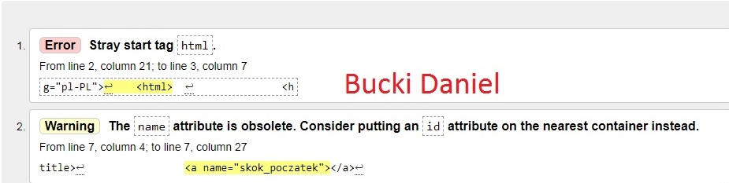

Daniel
Daniel
Daniel
Daniel
Daniel
Daniel
Daniel
-_- zażenowanie
o_o zaskoczenie
:p pokazywanie języka
B) uśmiech z okularkami
:| brak emocji
:O zdziwienie
Adres : 69-420 , Bydgoszcz, Piłsudzkiego, 3, 4
Ulubiony Aktor : Bryan Cranston
Ulubiony Zespół Muzyczny : D12
Data urodzenia : 29 napewno_nie_luty 2004.
H2SO4
x*x=x2
Ty zaproponuj swoje, związane z informatyką
Walidator HTML to specjalistyczny program lub aplikacja służąca do sprawdzania znaczników HTML na stronie internetowej pod kątem ewentualnych błędów składniowych i leksykalnych
Walidator – program sprawdzający poprawność dokumentu o określonej składni
